Barrels are denoted by the icon 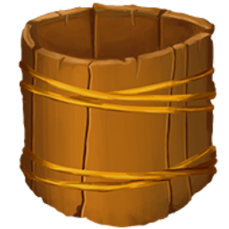
The increase the storage capacity of a specific resource (which is displayed on the Barrel icon beneath the Upgrade menu
When bought, the capacity of the resource is increased by its BASE capacity (other than food and water, which is half its base capacity). This means that buying a...
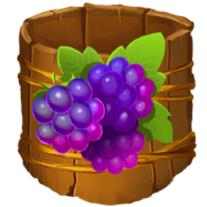Food Barrel adds 50 food capacity
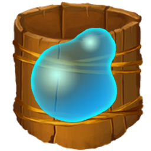Water Barrel adds 50 water capacity
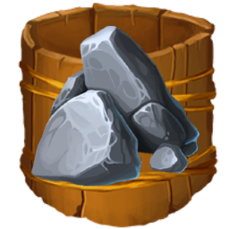Stone Barrel adds 25 stone capacity
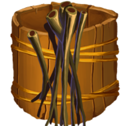Stick Barrel adds 25 stick capacity
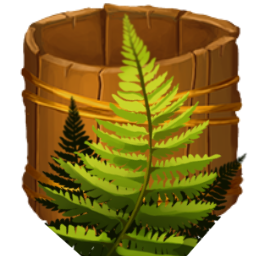Fiber Barrel adds 25 fiber capacity
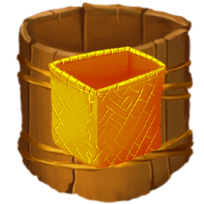Basket Barrel adds 1 basket capacity
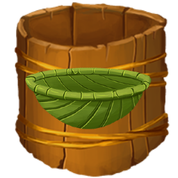Bowl Barrel adds 1 bowl capacity
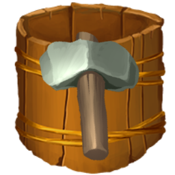Hammer Barrel adds 1 hammer capacity
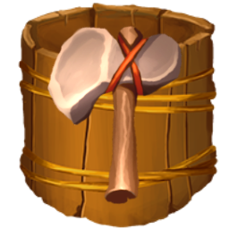Axe Barrel adds 1 axe capacity
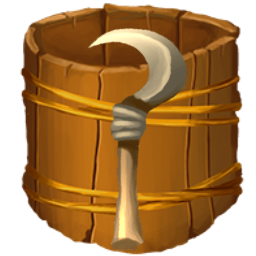Sickle Barrel adds 1 sickle capacity